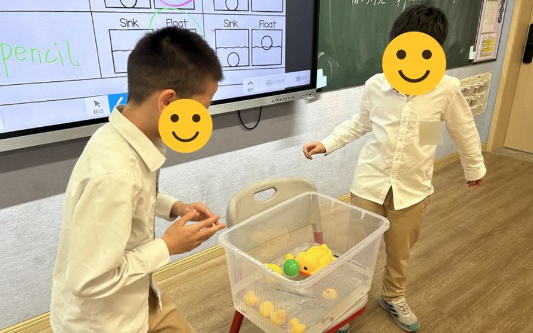
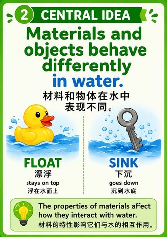
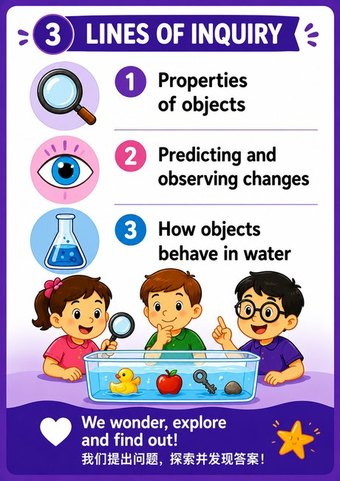

Curriculum Leadership
- Provide ongoing curriculum support to the entire English teaching team across Grades 1–8 — unit planning, inquiry implementation, assessment design, and IB standards alignment
- Lead PYP–MYP transition planning, developing scaffolded progressions and concept-based frameworks to prepare students for middle-years expectations
- Collaborate with primary and middle school leadership on schoolwide IB development priorities
IB Authorization Support
BI Zandem Academy — IB Candidate School
Targeting PYP and MYP verification visit — November 2026. Contributing to authorization documentation, cross-subject ATL alignment, and professional development tracking across MYP subject groups.
The English Team as an Organic PLC
Our English team is an odd and wonderful mix: a veteran teacher, a fresh graduate, a doctorate student, an experienced IB practitioner, and me. Nobody assigned us to be a professional learning community — we just became one, because everyone actually wants to get better. My job, as I see it, is to give that energy some structure: regular time to reflect together, shared planning protocols, and whatever verified IB knowledge I can bring back from my own coursework.
The concrete commitments behind this — a weekly reflection habit, ongoing IB professional development, and a monthly team reflection session — are documented on the Professional Learning page, where they belong with the coursework that shaped them.
Recognition
Outstanding Teaching Design Award — Zandem Academy, July 2026
Awarded by Chongqing Zandem Academy for the integration of IB inquiry-based learning pathways with China's New Curriculum Standards through "Big Unit Teaching" (大单元教学) during the 2025–2026 second semester. The award specifically recognised curriculum design work including the Grade 7 bilingual hotel research unit and other cross-curricular lesson innovations.
School-Wide Initiatives
Every unit in my classes ends with students presenting to their classmates — and my Selective class takes selected performances to the stage, celebrating language growth and international mindedness.
Sit with colleagues one-on-one when a unit isn't working — sometimes the most useful leadership is just thinking together over a planner.
Building school-wide momentum toward IB-inspired practices: monthly teacher-sharing, cross-curricular projects, and interdisciplinary grade-level work.
Teaching for Visiting Families — "Sink or Float"
In May 2026 our school hosted a partner kindergarten for a half-day transition visit, so that families could see what primary school actually looks like before their children start. I taught the English inquiry lesson: "Sink or Float." Five-year-olds predicting, testing, and arguing about what happens when you put things in water — in English, with their parents watching from the back of the room.
Afterwards the kindergarten's principal wrote to our school. Among the parts of the morning she picked out by name was the foreign teacher inquiry class, "Sink or Float." She wrote that the teachers were professional and warm, that the children played happily and learned with real involvement, and that parents left with a clearer and more reassured sense of what primary school would be like.

The lesson ran on the PYP transdisciplinary theme How the World Works, with the central idea that materials and objects behave differently in water. I built the concept slides bilingually so the parents in the room could follow the inquiry alongside their children.


Being named in a letter written to thank the whole school is the closest thing I have to outside evidence that an inquiry lesson lands — not just with children, but with the parents deciding where to send them.
Where I see myself going
My longer-term goal is to move into an IB curriculum leadership role — whether as a subject coordinator, curriculum specialist, or programme coordinator at a school where the IB framework is central to the school's identity. I want to work at the intersection of curriculum design, teacher professional development, and student learning outcomes, rather than staying solely in the classroom.
The work I do informally right now — leading curriculum conversations, supporting colleagues on IB alignment, contributing to authorization preparation — is the work I want to do formally. I'm building toward that deliberately: through the Windsor IBEC programme, through subject-specific IB professional development, and through every collaborative planning session where I get to think about curriculum with other teachers rather than just delivering it alone.
Next steps
Concretely, the sequence looks like this. Finish the Windsor PYP certificate (August 2026). See BI Zandem through its verification visit (November 2026) — and learn everything the authorization process has to teach. Then a CAT1 workshop to extend into the MYP. Each step feeds the one after it: the coursework strengthens what I bring to the team, the team work strengthens the case for a formal curriculum role.